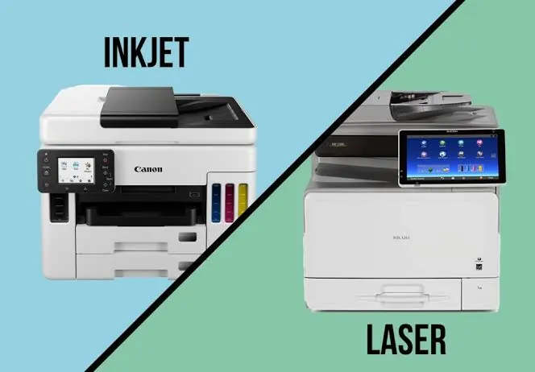

Printers
Inkjet vs Laser Printers: Which One Should You Buy?
Compare inkjet and laser printers for home and office use, including print quality, speed, consumables, maintenance, workload and total cost.

Introduction
One of the first things to consider when selecting a printer is whether you would like an inkjet or a laser printer. Both are capable of printing excellent documents for everyday use, however they do differ in how they operate. Inkjet printers use liquid ink and spray tiny dots of ink onto the page. Laser printers use toner, which is a powder made using heat.
The type of printer you choose will depend on what you are printing, how much you print, whether you need to print photographs/colour and how much you are willing to spend in the long run. Even though some printers may be cheaper to purchase, you need to consider how much you will be spending on consumables and maintenance. Below gives you an insight into the pros and cons of each printer type so you can decide which one is right for you.
How Inkjet Printers Work
Inkjet printers spray tiny drops of liquid ink onto the page using a printhead. The printer controls where and how much ink goes onto the page to create text, graphics and images. These can come in a few different styles. Some will have separate black and colour cartridges, some will have multiple colour cartridges and some will have ink tanks.
This type of printer is very versatile and is commonly used in the home, for school projects, photographs and colour printing. Some will have specialised photo paper and support a wide variety of media. Photo printers will often have extra ink colours to give more tone and colour to the printed image.
The main thing to note is that ink is a liquid. If you don’t use your printer for a long time, the ink can dry out in the nozzles. Maintenance cycles may also use ink. Replacement cartridges can vary in cost. Ink tank printers can give a cheaper cost per page if you print a lot, however they may be more expensive to purchase.
How Laser Printers Work
Laser printers operate using electro-photography. Using a laser or LED system an image is created onto the photosensitive drum. The toner powder then gets attracted to the correct areas and it gets transferred onto the page. The fuser then uses heat to fuse the toner to the page.
Laser printers are commonly chosen for printing text based documents. They can create very sharp text and often have a higher volume of documents. As the toner is a dry powder, there is no chance of it drying out in the printhead, which can be beneficial to those that don’t print often.
However laser printers can be more expensive to purchase, especially if you want colour. They can also be larger and heavier than basic inkjet printers. Some may have separate drums and maintenance parts that need replacing. The colours produced are great for many charts and business documents but if you need detailed photos, an inkjet printer focusing on photos may be a better option.

Print Quality – Text, Graphics & Photos
Both printers can produce clear documents for letters, assignments, invoices and reports. Laser printers are often great for creating sharp black text. Inkjet printers can also produce excellent documents if the printhead is in good condition and with the correct paper settings.
Inkjet printers often produce great results for photographs. Photo printers can give smooth gradients and detailed colour. Not all inkjet printers will be specialised for high quality photo printing so look at sample prints and specifications.
If you need to print charts for your business, a colour laser may be a good option. The quality will depend on the resolution, colour system, paper and settings. If you need accurate colours, look at independent reviews and samples.
Print Speed & Volume
Laser printers are often a good option for printing text often. Many will have a high pages per minute and are designed for office use. Inkjet printers can vary a lot. Basic home printers may be slower, however business inkjets can offer much faster printing speeds.
Not all printers will be the same in terms of speed. You may find some have different results depending on whether you are printing in draft, standard or high quality. The first page may take longer to print, especially if your printer needs to warm up or the file is complex. Look at independent tests to see how they perform.
Look at how many pages you can print per month and maximum duty cycle. The recommended print volume will generally give a more practical figure. If you are regularly printing outside the recommended volume, you may get more wear and tear.
Costs – Ink, Toner & Page Yield
Look at how much the replacement ink/toner costs. Inkjet printers can be expensive with some models. If you have to replace all the colours with a combined cartridge it can be expensive. Ink tanks can offer a cheaper page cost if you are printing often, however the printer itself can be more expensive.
Laser printers often give a high page yield with text documents. Make sure the drum comes with the toner cartridge or separately. Some printers will require maintenance kits or other parts to be replaced. This should be taken into account when calculating how much it will cost you overall.
The page yields shown are based on standard testing conditions. How much you actually print will depend on how much coverage you have, the print mode, type of document and how much you print. If you have a page with lots of colour in a photo, you will use more ink/toner than if you had just a few lines of text. Calculate how many pages you print a month and look at the costs. Make sure you are using the correct consumables for the exact model.
Maintenance & Reliability
Inkjet printers may require you to clean the nozzles, align the printhead or use manufacturer approved cleaning. If you don’t use your printer for a long time, this can cause blocked nozzles. Follow the manufacturers guidelines for using your printer occasionally. Don’t run too many cleaning cycles as this can waste ink.
Laser printers don’t have liquid ink nozzles but they still require maintenance. Toner cartridges, drums, rollers and fusers all have a service life. Paper dust, incorrect media and high volume printing can cause issues with feeding and print quality. Some parts can become hot so make sure you follow the manual and let your printer cool down where required.
Reliability will depend on the exact model, build quality, environment and volume. Make sure you know the warranty, availability of parts and local service.
Size, Connectivity & Extra Features
Inkjet printers are often smaller than many office laser printers. Measure how much space you have and make sure you have enough room for trays, lids and airflow. Consider how noisy it is if you are going to be using it near to your study area.
Look at the connectivity options. Are there USB, Wi-Fi and Ethernet options? Can you print from your mobile? Is it an all-in-one printer? If you are printing in an office, having an automatic document feeder, duplex printing, larger paper capacity and secure printing can be useful. Make sure it has the correct paper sizes and media.
Don’t pay for extra features that you won’t use. A basic mono laser can be perfect for printing text based documents in your home office. If you are a student and need to scan colour documents and occasionally print photos, you may want an all-in-one inkjet.
Which Printer Should I Choose?
If you are printing occasional assignments, forms and colour documents in the household, an inkjet all-in-one would be convenient. If you are a family printing lots of colour documents, compare ink tank printers and work out how much it will cost to print with ink. If you are only printing a few pages a month, think about how it performs if you don’t use it.
If you have a small office and printing mainly invoices, contracts and reports, a mono laser printer can be beneficial. If you need to print colour charts and presentations, compare colour lasers and business inkjets. If you are a designer/photographer, look for an inkjet that will give you the best image quality, correct paper options and colours.
If you are in a school, clinic or high volume environment, look at the recommended print volume, paper capacity, speed, availability of consumables and response time from service. The cheapest printer may cause more downtime.
Top Tips When Buying
Work out how many pages you are likely to print a month. Split into text, colour and photo printing. Decide if you need to scan, copy, duplex or share across the network. Compare the cost, page yield, cost of replacement parts and the warranty. Make sure you know the exact cartridge/toner codes and they are easily available.
Look at reviews for the exact model. If possible look at sample prints. Make sure you have enough space to fit the printer. Check it is compatible with your computers and mobile devices. If you are printing in a business environment, think about security on the network, user access and support. Keep your invoice and model to order supplies in the future.
Conclusion
Both inkjet and laser printers are useful but serve different purposes. Inkjet printers can be very appealing for printing photographs, colour and for home projects. Laser printers are often a good option for quick regular printing and text based printing. Ink tanks can also be a good option if you are printing lots of colour and want to compare the cost of refilling.
Choose the printer based on your printing volume, quality requirements, monthly volume, overall cost and support. It is best to compare exact models and consumables.
Need a hand with your printer or laptop?
Printerworld sells printers, laptops and genuine supplies, and repairs and services both. Bring in your model number and we will help you get it right.